Philippine Airlines Website
Increasing PAL's online revenue by improving content discovery and accessibility
Improve the website so PAL increases online revenue by 20%
Improve content discovery and overall accessibility especially on mobile
15% more mobile sessions, 12% more new users, 28% more visits to other pages, 100% more traffic from home page to booking flow
Sole designer, conducted benchmark studies, sitemap evaluations, information re-architecture, interface design, and prototyping
Philippine Airlines is the flag carrier of the Philippines, flying about 15 million passengers a year. In 2018, PAL wanted to grow online revenue by 20%, and its digital marketing team believed a better website could get them there.
"How can we improve the website so PAL increases online revenue by 20%?"
Joining mid-stream as lead designer
I joined as a second designer after research was done. Two weeks in, the original designer moved on and I became the lead. I had to earn trust fast with stakeholders who had spent months on research. The research was solid, but the recommended solutions didn't account for PAL's technical constraints or organizational realities:
- Legacy booking engine: The booking flow ran on Amadeus, a third-party system we couldn't redesign without major backend work
- Marketing vs. Product tension: Marketing wanted maximum promotional space; Product wanted a clean, conversion-focused page
- Mobile traffic vs. desktop revenue: 60% of traffic was mobile, but 70% of revenue came from desktop bookings
- Timeline pressure: 6 months to launch before peak holiday booking season
What the audit found
The heuristic evaluation surfaced 20+ issues, mostly around navigation and accessibility, that made content hard to find.
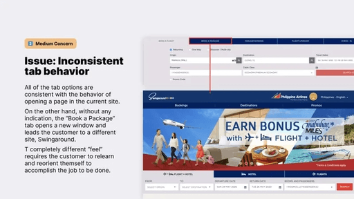
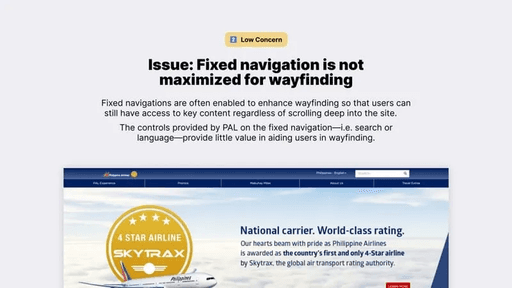
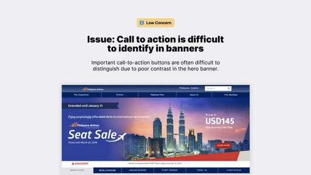
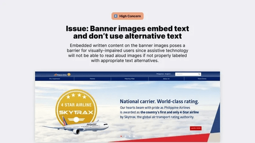
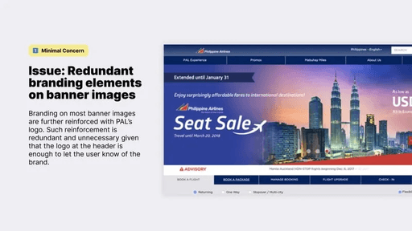
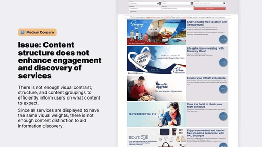
Benchmarking PAL's sitemap against other airlines showed that:
- Revenue-generating content, like baggage and seat upgrades, was buried deep in the site.
- Content often wasn't where customers expected it.
- Some pages were repeated across the site, adding to the overload.
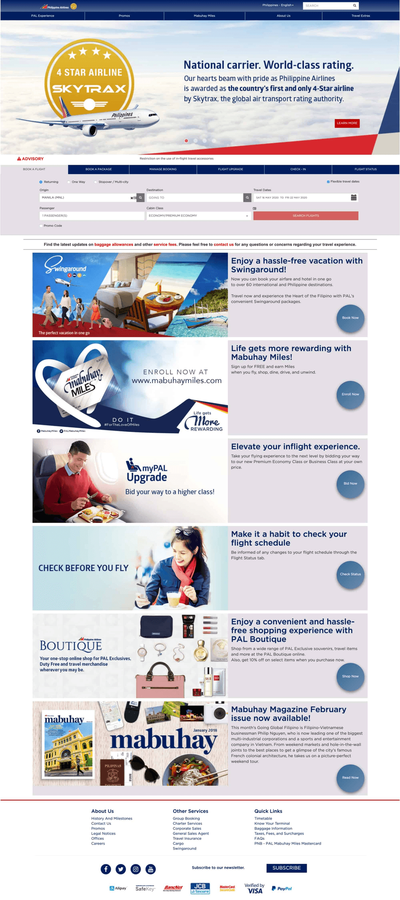
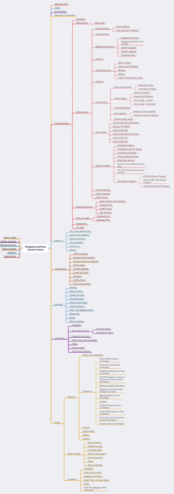
Deciding what not to fix
We couldn't fix 20+ issues in 6 months with the booking engine off-limits. I ran a prioritization workshop with Marketing, Product, and Engineering leads. For each issue we asked: is it blocking revenue, does the fix need backend work, and can we ship it in a phase to show early progress?
The trade-offs we made
- Deprioritized the booking flow redesign because of backend constraints, and focused on making ancillary revenue easier to find (baggage, upgrades, insurance).
- Compromised on promotional space: Marketing got a Flight Promotions section, but separate from Travel Extras to reduce cognitive load.
- Invested heavily in mobile IA, where users struggled most, and accepted that desktop would get less attention despite its higher revenue.
Getting aligned took 3 weeks. Without it, we would have designed things Engineering couldn't build or Marketing wouldn't approve.
What we shipped
I focused on three bets: fix the information architecture (frontend-only, high impact), surface ancillary products that drove 20% of online revenue, and design mobile-first because mobile users bounced at 2x the rate.
Restructure the information architecture
We cut redundancies, like About Us links repeated in the main and footer navigation, and built the sitemap around paths to user tasks. Some information still sits a few levels deep, but it's easier to reach from the home page.
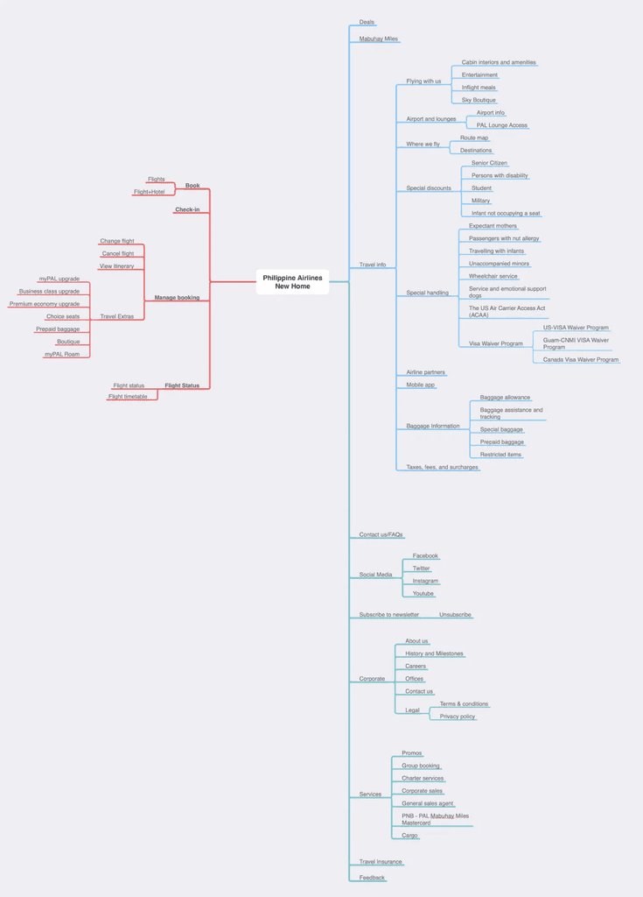
Make travel information easier to find
The new main navigation organizes Travel Information the way customers think about it and gives quick access to self-service content that used to be underexposed.
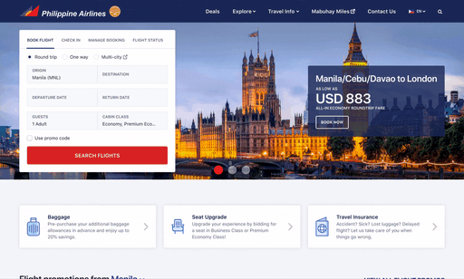
Keep primary actions above the fold
The four main jobs customers come for (booking a flight, checking in, managing a booking, and checking flight status) now live in one form that's always above the fold.
Separate flight deals from extras
The old design put every promo in one section. We split it into Flight Promotions, for discovering cheap trips, and Travel Extras, for insurance and lounges that add revenue for the airline.
Make revenue-generating products visible
Extra baggage, seat upgrades, and travel insurance made up about 20% of PAL's online revenue. The new design gives them a spot that stays above the fold on most devices.
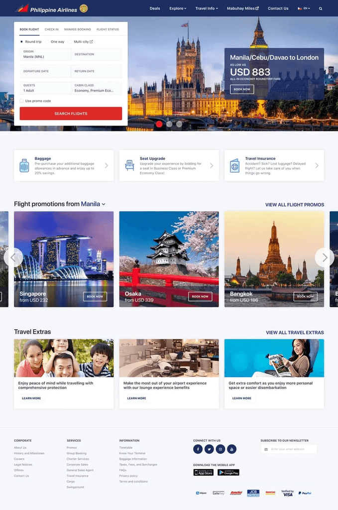
Design for mobile first
On mobile, key actions sit within thumb reach, revenue products sit right below them, and the navigation sticks to the top.
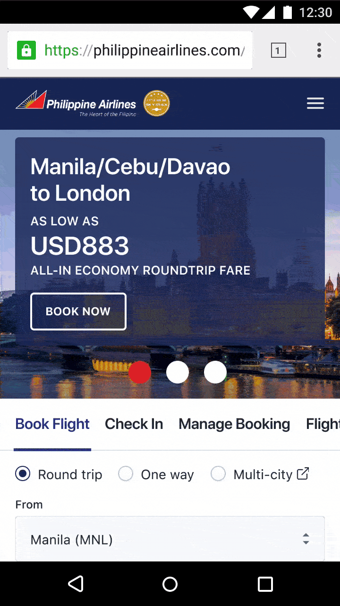
The mobile bet: designing for traffic, not revenue
The hardest call was investing in mobile when desktop drove most of the revenue. I argued to leadership that mobile was a conversion problem, not a traffic problem:
- Mobile users had a 2x higher bounce rate than desktop
- Mobile users who did convert had 30% lower cart abandonment
- Mobile traffic was growing 15% YoY; desktop was flat
Optimizing only for today's desktop revenue would miss where user behavior was heading. What won stakeholders over was reframing mobile from "low revenue" to "untapped potential."
Results
3 months before vs. after
- +15% mobile sessions, +12% new users
- -13% homepage dropoff, +100% traffic to booking flow
- +28% pages per session, +6% session duration
According to Sitecore
- 122% increase in organic search conversions
- 80% increase in web users
- 205% increase in direct search conversions
- 93% increase in web sessions
- 110% increase in social traffic conversions
Key learnings
- Joining mid-stream means building credibility fast. I had two weeks to absorb months of research and earn trust. Asking informed questions worked better than challenging decisions without data.
- Constraints forced us to prioritize. The legacy booking engine pushed us toward high-impact, frontend-only changes we could ship quickly.
- Stakeholder alignment is harder than design execution. Design took 8 weeks; aligning Marketing, Product, and Engineering took 3. That alignment was the most valuable thing I did, because it prevented months of rework.
- Watch the leading indicators. Of the 15+ metrics we tracked, the ones that mattered most were homepage-to-booking-flow traffic (+100%), pages per session (+28%), and bounce rate (-13%). They predicted revenue growth before it showed up in sales data.